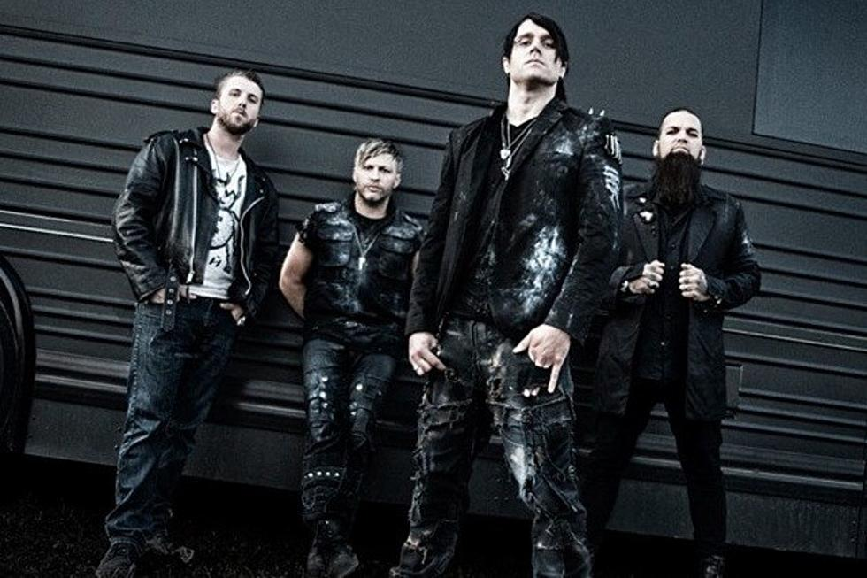

Three Days Grace
Three Days Grace (znany też jako TDG lub 3DG) – kanadyjski zespół metalu alternatywnego, założony w 1997 roku w Norwood w Kanadzie na kanwie formacji Groundswell. 17 stycznia 2013 roku zespół ogłosił, że wokalista Adam Gontier rezygnuje z dalszej współpracy. Jego miejsce zajął Matt Walst, brat basisty.
